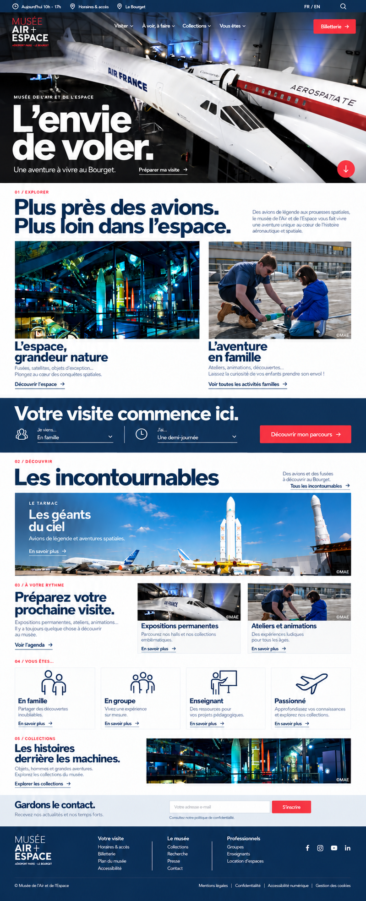
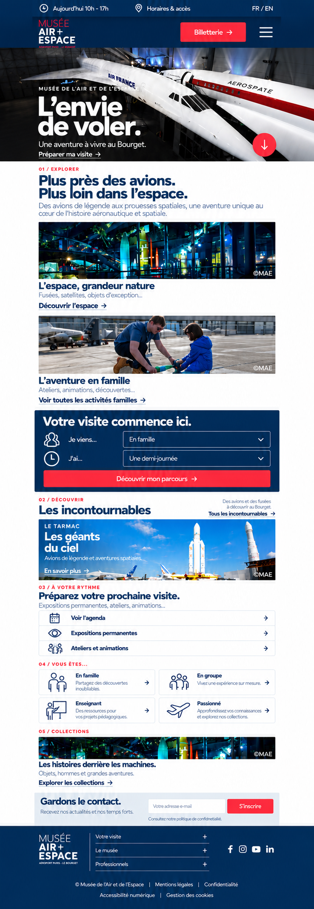
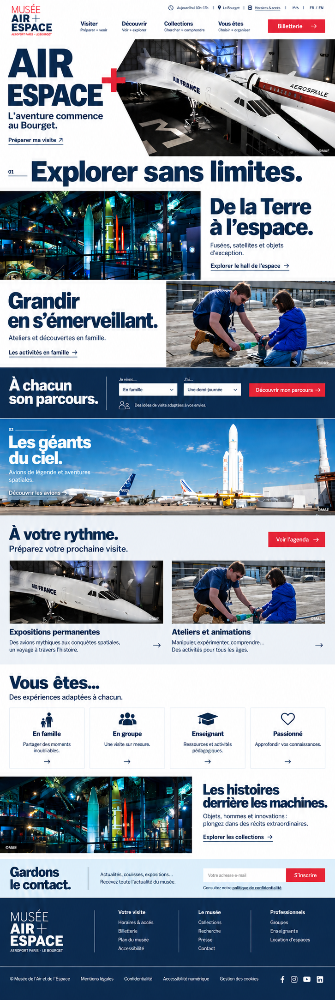
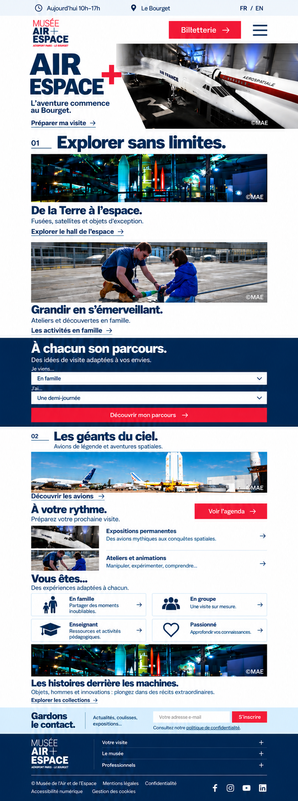
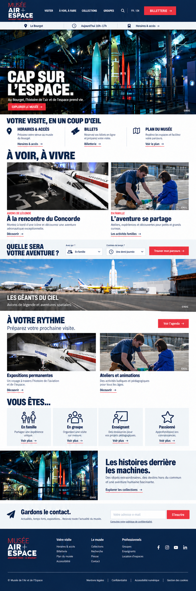
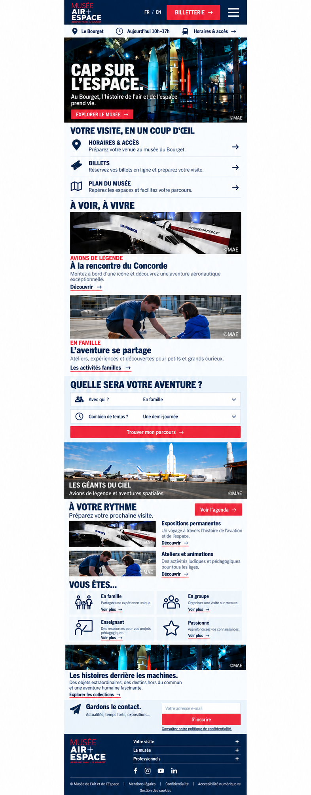

A
Photographic
Rijksmuseum-inspired · immersive images


B
Graphic
MIT-inspired · typography and geometry


C
Visitor-focused
Science Museum-inspired · clear visit planning


Static visual concepts generated with the built-in image generation tool, using the museum’s photographs as references. Scroll interactions are not represented. Revised homepages and four inner pages are available for directions A, B and C in the desktop sets linked above.